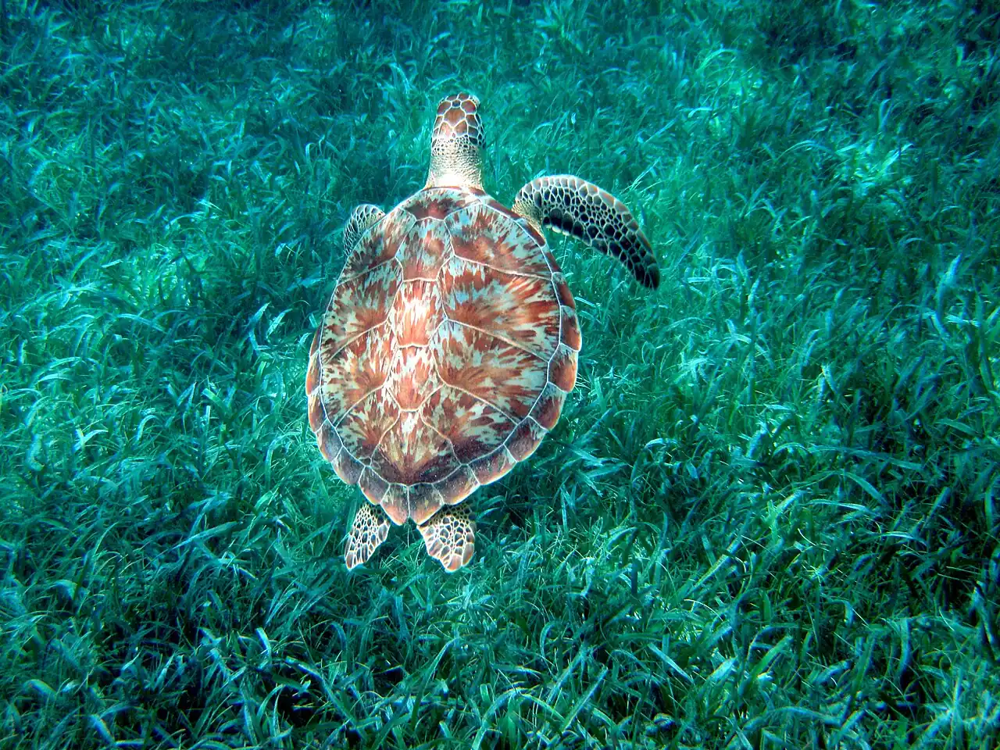

Hol Chan
Ambergris Caye, Belize · snorkeling, plongée

Réserve marine au sud d’Ambergris Caye, autour d’une passe étroite dans la barrière de corail du Belize. On y observe coraux, tortues et bancs de poissons, puis les raies et requins-nourrices de Shark Ray Alley, toute proche.
- Lieu
- Ambergris Caye, Belize
- Niveau
- Intermédiaire
- Activités
- snorkeling, plongée
- Type d'eau
- Mer / océan
- Coordonnées
- 17.86, -87.98 (position approximative du secteur)
Dangers à connaître
- Courant parfois fort dans la passe du récif.
- Nombreux bateaux d’excursion : reste groupé près de ton guide.
Le conseil d'Ocean Buddy
Visite la réserve avec un guide agréé et demande-lui le meilleur moment pour limiter le courant dans la passe.
Ouvrir dans Ocean Buddy Télécharger sur l'App Store
Source : Fiche Ocean Buddy · septembre 2026 · à vérifier localement.